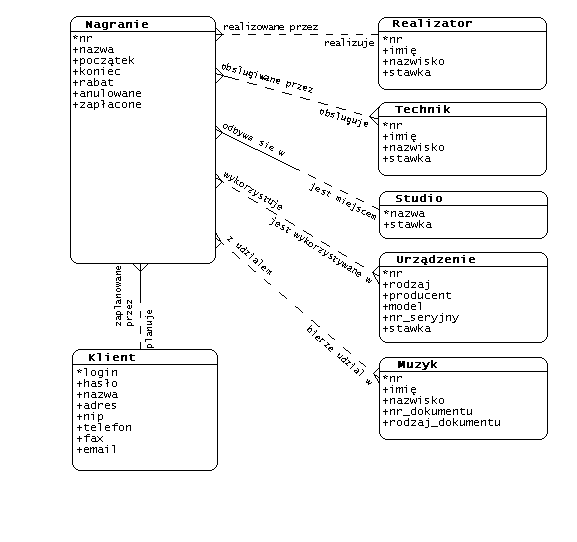

Autor: Maciek Makowski (189188): m.makowski@students.mimuw.edu.pl
System obs³ugi studia s³u¿y do rezerwacji zasobów (studiów, sprzêtu i personelu) na sesje nagraniowe. Informacje o dostêpnych zasobach i o planowanych sesjach przechowywane s¹ w bazie danych. W celu dokonania rezerwacji b¹dŸ przejrzenia informacji o planowanych sesjach klient korzysta z Interfejsu Klienta dostêpnego za poœrednictwem WWW. Uaktualnianie danych dotycz¹cych zasobów oraz aktualizacja informacji o planowanych sesjach (które to informacje zmieniaj¹ siê np. po dokonaniu wp³aty przez klienta) odbywa siê za poœrednictwem Interfejsu Administratora (Oracle*Forms).
Uwaga: system umo¿liwia klientom przegl¹danie rozliczeñ za sesje, lecz nie zosta³ zaprojektowany do obs³ugi rozliczeñ finansowych z klientami – umo¿liwia jedynie wprowadzanie informacji o wp³aconej kwocie.

rodzaje_dokumentow
rodzaje_urzadzen
producenci_urzadzen
muzycy
sek_muzycy_pk – sekwencja generuj¹ca wartoœci klucza g³ównego
klienci
sek_klienci_pk – sekwencja generuj¹ca wartoœci klucza g³ównego
pers_klienci – perspektywa ukrywaj¹ca has³a klientów
studia
technicy
sek_technicy_pk – sekwencja generuj¹ca wartoœci klucza g³ównego
realizatorzy
sek_realizatorzy_pk – sekwencja generuj¹ca wartoœci klucza g³ównego
realizatorzy_insert – wyzwalacz odczytuj¹cy wartoœæ klucza g³ównego z sek_realizatorzy_pk dla nowo wstawianego wiersza.
urzadzenia
sek_urzadzenia_pk – sekwencja generuj¹ca wartoœci klucza g³ównego
nagrania
sek_nagrania_pk – sekwencja generuj¹ca wartoœci klucza g³ównego
urzadzenie_nagranie
technik_nagranie
muzyk_nagranie
zalogowani_uzytkownicy
niezweryfikowani_uzytkownicy
forms_uzytkownicy – perspektywa zawieraj¹ca wszystkie dane niezweryfikowanych u¿ytkowników – wykorzystywana przez Oracle*Forms.
forms_uzytkownicy_update – wyzwalacz „INSTEAD OF” do zmiany danych w perspektywie
forms_uzytkownicy_delete – wyzwalacz „INSTEAD OF” do usuwania wierszy z perspektywy
S³u¿¹ do obs³ugi akcji wykonywanych z poziomu Interfejsu Klienta
loguj
wyloguj
zalogowany
dobry_login
rejestruj
nowy_muzyk
nowa_sesja
rezygnuj_z_sesji
anuluj_sesje
dodaj_muzyka
usun_muzyka
dodaj_technika
usun_technika
dodaj_urzadzenie
usun_urzadzenie
usun_realizatora
koszt_personelu
koszt_studia
koszt_urzadzen
technik_wolny
realizator_wolny
studio_wolne
urzadzenie_wolne
U¿ytkownik scott ma uprawnienia SELECT na wszystkie tabele z 1.2.1 i 1.2.3 oraz wszystkie tabele z 1.2.2 poza tabel¹ klienci (w zamian za to ma uprawnienie SELECT na pers_klienci). Prócz tego ma on uprawnienie EXECUTE na wszystkie procedury i funkcje w 1.2.5
Interfejs klienta zrealizowany zosta³ przy pomocy jêzyka skryptowego PHP. Komunikuje siê z baz¹ danych przez serwer HTTP loguj¹c siê jako u¿ytkownik scott.
W celu zapewnienia bezpieczeñstwa danych na temat sesji zarezerwowanych przez klienta wprowadzony zosta³ system logowania. Przed skorzystaniem z Interfejsu Klienta u¿ytkownik musi podaæ swoj¹ nazwê i has³o; jeœli has³o jest poprawne, przechodzi do Interfejsu Klienta, zaœ fakt zalogowania siê zostaje odnotowany w tabeli zalogowani_uzytkownicy. To rozwi¹zanie zabezpiecza przed dostêpem do danych niepowo³anych osób, lecz poci¹ga za sob¹ koniecznoœæ wylogowywania siê po zakoñczeniu korzystania z interfejsu u¿ytkownika – w razie niewylogowania siê powtórne zalogowanie nie bêdzie mo¿liwe a¿ do automatycznego wylogowania u¿ytkownika przez system, które powinno nast¹piæ w przeci¹gu 12 godzin od zalogowania siê (ta funkcjonalnoœæ nie zosta³a zaimplementowana).
Po pomyœlnym zalogowaniu siê na ekranie wyœwietlone zostaje g³ówna strona interfejsu. Zawiera ona spis sesji w trzech kategoriach:
U¿ytkownik mo¿e:
·
obejrzeæ informacje o szczegó³ach sesji,
Planowanie sesji odbywa siê na zasadzie kreatora, który w kolejnych krokach prosi o podanie informacji na temat planowanego nagrania.
Korzystanie polega na uruchomieniu formularza START, z którego mo¿na przejœæ do formularzy: